Exemplo 7.1.1. Calcule a derivada numérica da função 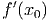 no
ponto 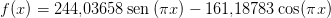 usando  , 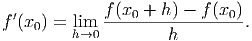, 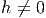 e 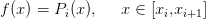.
, 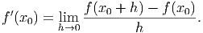, 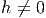 e 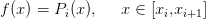.
Dado um conjunto de pontos 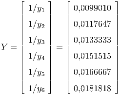, a derivada 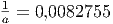 pode ser calculada de várias formas. Na próxima seção trabalharemos com diferenças finitas, que é mais adequada quando as abcissas estão próximas e os dados não sofrem perturbações significativas. Na seção subsequente trataremos os casos quando os dados oscilam via ajuste ou interpolações de curvas.
A derivada 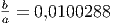 de uma função 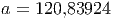 no ponto 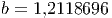 é
|
|
Da definição, se 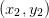 é pequeno (não muito pequeno para evitar o cancelamento catastrófico), é esperado que uma aproximação para a derivada no ponto 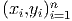 seja dada por:
|
| (7.1) |
Solução. Usando a fórmula de diferenças dada pela Equação (7.1), devemos calcular:
|
|
para cada valor de 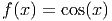 solicitado, obtemos a Tabela ??.
No Scilab, podemos calcular a aproximação da derivada 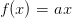 com 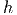 usando as seguintes linhas de código:
E, similarmente, para outros valores de 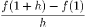 e 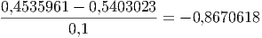. 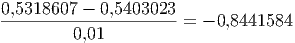
Observe que, no exemplo anterior, quanto menor 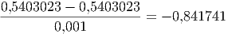, melhor é a aproximação, visto que o valor exato para a derivada é 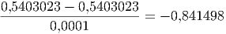. Porém, quando 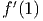, a derivada numérica é 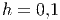 (usando aritmética double), resultado pior que aquele para . Além disso, na mesma aritmética, quando 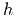 a derivada numérica calculada é zero (cancelamento catastrófico). Isso nos motiva a pensar qual é o melhor .
Essa aproximação para a derivada é denominada diferenças progressivas. A derivada numérica também pode ser aproximada usando definições equivalentes:

Exemplo 7.1.2. Calcule a derivada numérica da função 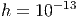 no ponto 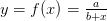 usando diferenças progressivas, diferenças regressivas e diferenças centrais com 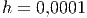, 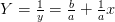 e 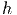.
Solução. A tabela abaixo mostra a derivada numérica para cada valor de 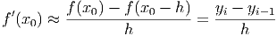.
| Diferenças | h=0,1 |
| Progressivas | 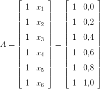 |
| Regressivas | 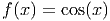 |
| Centrais | 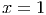 |
| Diferenças | h=0,01 |
| Progressivas | 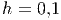 |
| Regressivas | 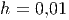 |
| Centrais | 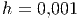 |
| Diferenças | h=0,01 |
| Progressivas | |
| Regressivas | 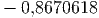 |
| Centrais | 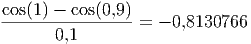 |

Seja 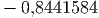 a aproximação da derivada de 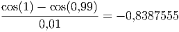 em 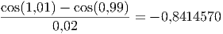 por diferenças progressivas, a aproximação por diferenças regressivas e a aproximação por diferenças centrais, então


Exemplo 7.1.3. Calcule a derivada numérica e o erro de truncamento de em pela fórmula de diferença progressiva para , e .
Solução. Como , então .
Para entender como os erros de arredondamento se propagam ao calcular as derivadas numéricas vamos considerar o operador de diferenças finitas progressivas


![| | || --------- ----- ||
||f′(x ) − D---f(x)|| = ||f′(x) − f(x-+-h)-−-f(x-)(1 + ε (x,h ))||
+,h | h |
|| (--------- -----
= ||f′(x) − f-(x +-h) −-f(x) + f-(x-+-h-) −-f-(x +-h)
| h h
) ||
+ f(x-) −-f-(x-) (1 + ε)||
h |
|| ( f (x + h ) − f (x) f(x-+-h-) − f (x + h )
= ||f′(x) + − ----------------− --------------------
|----- h h
f(x ) − f (x )) ||
+ ------------ (1 + ε)||
| h | | ( |-------- |
|| f(x + h) − f(x )|| ||f (x + h) − f(x + h)||
≤ ||f′(x) − ----------------|| + ||-------------------||
|---- |) h | h|
||f (x) − f(x)|| ||f(x + h) − f(x)||
+ ||-----------|| |1 + ε| + ||---------------||ε
h(| | | |) h
||δ-|| ||δ|| ′
≤ M h + ||h || + ||h|| |1 + ε| + |f(x )|ε
( )
2δ- ′
≤ M h + h |1 + ε| + |f (x)|ε](main3404x.png)
Esta estimativa mostra que se o valor de for muito pequeno o erro ao calcular a aproximação numérica cresce. Isso nos motiva a procurar o valor ótimo de que minimiza o erro.
Solução. Segue a tabela com os valores da derivada para vários valores de .
|
|
|
|
|
|
Observe que o valor exato é e o ótimo é algo entre e .
Para aproximar a derivada de uma função em  , ou
usaremos os três pontos vizinhos , e . Uma
interpolação usando polinômios de Lagrange para esses três pontos é da forma:
, ou
usaremos os três pontos vizinhos , e . Uma
interpolação usando polinômios de Lagrange para esses três pontos é da forma:
 é
é
 | (7.2) |
Trocando por , temos
 |
Considerando uma malha equiespaçada onde e , temos:
|
|
Similarmente, trocando por  ou trocando por na expressão (7.2),
temos outras duas expressões
ou trocando por na expressão (7.2),
temos outras duas expressões
![1 [ 3 1 ] f ′′′(ξ(x0))
f′(x0) = -- − -f(x0) + 2f(x0 + h) − --f(x0 + 2h) + h2----------
h [ 2 ]2 ′′′ 3
f′(x + h) = 1- − 1f(x ) + 1f (x + 2h) + h2f--(ξ(x0 +-h))
0 h 2 0 2 0 6
1 [1 3 ] f′′′(ξ(x0 + 2h))
f′(x0 + 2h) = -- -f(x0) − 2f (x0 + h ) + -f(x0 + 2h) + h2 ---------------
h 2 2 3](main3441x.png)
Analogamente, para construir as fórmulas de cinco pontos tomamos o polinômio de Lagrange para cinco pontos e chegamos a cinco fórmulas, sendo uma delas a seguinte:
|
| (7.6) |
Solução. A tabela mostra os resultados:
![|--------------------------|------------|---------------|-------------------|
| h | h = 0,1 | h = 0,01 | h = 0,001 |
|--------------------------|------------|---------------|-------------------|
| diferenças progressivas |− 0,2809448 | − 0,3125246 | − 0,3158289 |
|--------------------------|------------|---------------|-------------------|
| diferen ças regressivas |− 0,3545920 | − 0,3199024 | − 0,3165667 |
|--------------------------|------------|---------------|-------------------|
| três pontos usando (7.3) |− 0,3127746 | − 0,3161657 | − 0,3161974 |
|--------------------------|------------|---------------|-------------------|
|-três-pontos-usando--(7.4)--|−-0,3177684--|-−-0,3162135---|---−-0,3161978------|
| | | | |
|-três-pontos-usando--(7.5)--|−-0,3135824--|-−-0,3161665---|---−-0,3161974------|
| | | | |
|cinco--pontos-usando-(7.6)-|−-0,3162384---−-0,316197677---− 0,3161976736860--
| |](main3449x.png)
Para aproximar a derivada segunda, considere as expansões em série de Taylor

Solução. A tabela mostra os resultados:
Dado os valores de uma função em pontos , as derivadas podem ser obtidas através da derivada de uma curva que melhor ajusta ou interpola os pontos. Esse tipo de técnica é necessário quando os pontos são muito espaçados entre si ou quando a função oscila muito. Por exemplo, dado os pontos , , , , a parábola que melhor ajusta os pontos é
Agora olhe o gráfico da seguinte tabela de pontos.
Observe que as derivadas calculadas por diferenças finitas oscilam entre um valor pequeno e um grande em cada intervalo e além disso, a fórmula progressiva difere da regressiva significantemente. Por exemplo, por diferenças regressivas e por diferenças progressivas . A melhor forma de calcular a derivada aqui é fazer um ajuste de curva. A reta que melhor ajusta os dados da tabela é . Usando esse ajuste, temos .
![′′′
f ′(x0) = -1-[− 3f (x0) + 4f (x0 + h) − f(x0 + 2h)] + h2f-(ξ(x0))(7.3)
2h 3
′ -1- 2f′′′(ξ-(x0-))-
f (x0) = 2h [f(x0 + h) − f(x0 − h)] + h 6 (7.4)
1 f ′′′(ξ(x ))
f ′(x0) = ---[f(x0 − 2h) − 4f(x0 − h) + 3f (x0 )] + h2-------0-- (7.5)
2h 3](main3442x.png)